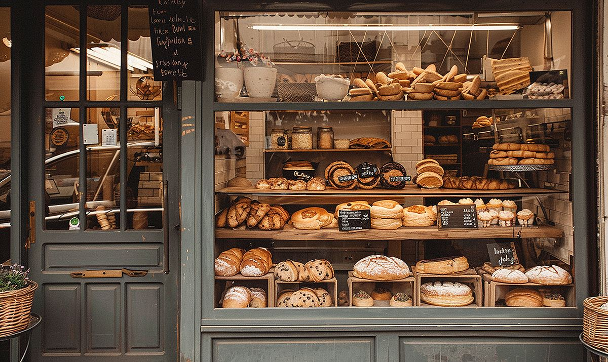

Our Story
North Star Bakery started as a single countertop oven and a promise to the neighborhood: fresh bread, every single morning, no exceptions. Over the years that promise grew into a full storefront, but the mission never changed. We are still here before sunrise, mixing dough by hand and baking in small batches so every loaf that leaves our ovens is one we would be proud to serve our own families.
Sourcing Philosophy
We source flour from regional mills, dairy and eggs from farms within a day's drive, and seasonal fruit from local growers whenever it is available. Buying close to home means fresher ingredients and a smaller footprint, and it keeps our prices fair for the neighbors who keep coming back.
Staff Highlights

- Head Baker: Leads the 4 AM bake and trains every new hire on our sourdough method.
- Pastry Lead: Designs the seasonal pastry case and custom celebration cakes.
- Front of House Team: Greets every customer by name whenever we can, and always has a recommendation ready.